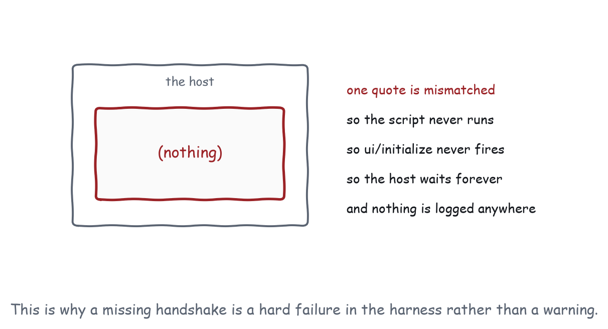

Chapter 25
Why Recipes Are the Test Suite
Capabilities pass in isolation and fail in composition. The thirteen applications exist to find out which, and the completeness test is what they answer.
The recipes are the test suite. Being illustrations is a side effect.
Part VI is about the difference between a book that asserts things and a book that checks them, and this is the decision everything else follows from.
Why testing capabilities alone is not enough
A host can implement every capability in Parts II and III correctly, one at a time, and still fail to run any of the recipes. Composition is where the failures live, and they are specific and repeatable:
Focus fails inside fullscreen, because the mode change re-parented the frame and the browser dropped focus with it.
Drag and drop conflicts with host scrolling, because the host’s conversation scroller and your drag gesture want the same pointer.
Shortcuts collide, because the host bound Cmd+F before your view existed and Chapter 9 has no mechanism to find out.
Streaming updates destroy selection, because a view that rebuilds its list on each batch is a view whose selection lasts one batch.
Resizing loses scroll position, because the frame changed height and the scroll container was measured against the old one.
Cancellation leaves optimistic state behind, because the compensating action was never recorded.
Every one of those is two capabilities that work. Only a recipe finds them, because only a recipe puts two capabilities in the same frame at the same time with a user in the middle.

The question the recipes answer
The question the recipes answer. Can a host construct conventional, native-like applications entirely from a small, well defined set of reusable UI capabilities?
There are only two ways for a recipe to fail, and both are informative.
If a recipe cannot be built from the primitives in Parts II and III, it has found a missing capability. Appendix B is where the fourteen current findings live, and Chapter 28 describes what turning one into a proposal involves.
If a recipe can be built but does not run in a particular host, it has found a conformance failure. That is a finding about an implementation, and the checklist in Appendix C is what turns it into a bug report with a specific line in it.
Nothing else is a possible outcome, which is what makes the exercise worth doing.
Why an empty delta is fatal
Every recipe carries a delta: the capabilities it exercises that no earlier recipe does. A recipe with an empty delta is merged or deleted.
That rule is what stops thirteen recipes from being thirteen views of the same six capabilities. It is also what determined the order: the Data Explorer is first because its delta is the baseline, and Settings is last because its delta is the picker set and the accessibility requirements, which need everything before them to be in place.
The deltas are generated from the registry rather than asserted in prose, so a recipe whose delta becomes empty because an earlier recipe grew will show it in the build output rather than in a reviewer’s memory.
What a recipe test asserts
Three kinds of thing, in increasing order of what they catch.
The handshake happened. ui/initialize went out, a result came back, ui/notifications/initialized followed. This is the cheapest check in the whole suite and it catches the worst failure: a view with a syntax error never runs, so it never sends anything, so the frame sits there empty with nothing logged anywhere. Every demonstration in this book is checked for it, and it is the reason a missing handshake is a hard failure in the harness rather than a warning.
The observable behaviour is right. The table has eight rows. Sorting changes the order. Undo restores the node at its original index. These are ordinary assertions about a running application.
The transcript is right. Selecting a row sent exactly one ui/update-model-context. Selecting a second one replaced rather than appended. Withdrawing downloadFile means no ui/download-file is ever sent. This is the layer that catches protocol regressions, and it is the layer that only exists because the whole conversation is JSON-RPC over postMessage and therefore recordable.
How is any of this deterministic?
An agentic application looks untestable. A model is involved, models are stochastic, and an assertion about a sampled token is not an assertion.
The way out is that the model is never in the loop of a recipe test. Every tool result is a recorded fixture. Every stream is a scripted sequence. Every failure is injected on purpose. The agent’s side is played by the harness calling the view’s registered tools, which is exactly what an agent would do and is completely deterministic.
That is a design constraint on the recipes themselves, not just on the tests. A recipe whose behaviour depends on what a model happened to say cannot be a test, so the recipes are built so that it does not. The model decides when to call connect_steps; the recipe decides what connect_steps does. Chapter 3’s local-first principle turns out to be the same rule as testability, which is a good sign that it is the right rule.
What building them actually found
The exercise is only worth anything if it produced findings, so here are the ones building thirteen applications against eighty-five capabilities turned up. None of them was predicted from reading the specification.
An empty red banner, visible in the Data Explorer. The error element had the hidden attribute set and was displayed anyway, because an author rule with a class selector beats the user agent’s [hidden] rule. Every component in the shared stylesheet that sets display had the same defect. Found by looking at a screenshot, fixed with one declaration, and the comment explaining it is still in apps/lib/view.css.
A transcript that changed on every run. The workflow builder minted node ids from Date.now(), and those ids travel to the agent in a tool result, so the recorded transcript differed every time the suite ran. The fix was a counter. The finding is that anything reaching the wire has to be deterministic or the whole of Layer 1 is noise.
Module scripts do not load from an opaque origin. The first version of the view bridge was an ES module, which is a CORS request from a sandboxed frame, which a static file host will not answer. It is a classic script now, and the reason is a comment at the top of the file.
Dynamic import resolves against the module, not the page. The demo widget loaded each demonstration’s fixture with a relative specifier and got a 404 on every page except the harness. Both of these are the kind of thing that is obvious once seen and costs an hour when not.
Half a theme is worse than none. Applying host style variables without removing the ones the host has stopped sending leaves the previous theme’s overrides in place, so a view that switches from a dark host to a bare one is unreadable. The specification warns about partial variable sets; this is the same hazard from the view’s side, and the bridge now tracks and clears what it applied.
A spreadsheet full of #VALUE. Every text cell rendered as an error, because the evaluator passed its contents through Number() and the view rendered the resulting NaN. It had been that way in every screenshot and nobody had looked at the top-left cell.
Accepting the agent’s rewrite could not be undone. Recipe 4 recorded its transaction by comparing the document against itself, which it did before replacing the text, so the comparison found no change and pushed nothing. One undo did not restore the human’s words. This is the safety property Chapters 15 and 20 both argue is the whole reason it is acceptable to let a model edit a document, and the recipe asserting it did not have it.
The monitoring console showed every line twice. It received the tool result it was rendered for and also called the tool itself on mount, so two rows shared an identifier and selecting one selected both.
Eight findings, seven of them in shipped code. The last three are the interesting ones, because they were invisible to every check that existed before: the messages were all correct, and the interface was wrong. They came from the layer described in the next chapter, which starts a real server, renders the view that server delivers, and then looks at the result.
What this cannot do
Two things this suite cannot do.
It cannot drive the view’s own interface from outside. The frame is sandboxed with an opaque origin and the harness cannot reach its DOM, which is the same property that stops a host reading it. So view-initiated behaviour is driven through the tools a view registers, which covers the recipes that register tools and does not cover the ones that do not. Chapter 26 says exactly which.
And it cannot tell you whether an application is any good. Every check in this book is about whether a thing works, not about whether it should exist. Chapter 3 is the only defence against building a well tested application that nobody wants, and it is not a test.